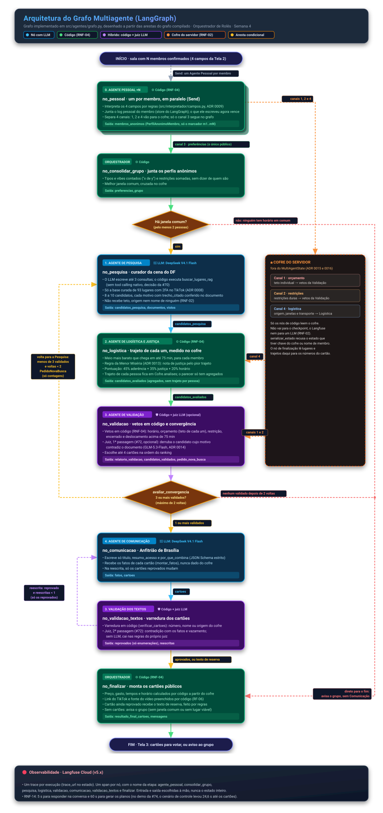

Arquitetura do Grafo Multiagente (LangGraph)¶
Challenge 2 — Residência em IA (Instituto Eldorado & UnB)
Semana 4: Primeiro Protótipo Funcional Multiagente
Tema: Orquestrador de Rolês no Distrito Federal
1. Visão Geral da Arquitetura¶
O sistema multiagente do Orquestrador de Rolês é estruturado como um grafo de estados direcionado e cíclico (StateGraph), implementado em src/agentes/grafo.py sobre a biblioteca LangGraph (ADR 0015, ADR 0016). A arquitetura segue dois princípios:
- Divisão entre cognição e determinismo (RNF-04): Modelos de linguagem atuam onde seleção semântica, julgamento de apoio textual ou redação em linguagem natural são necessários (Pesquisa, Comunicação e Juiz de Validação). Todos os cálculos aritméticos, matrizes de deslocamento das 35 RAs, cruzamento de janelas, Regra da Menor Miséria e vetos duros rodam em código Python puro.
- Separação estrita entre estado público e cofre do servidor (RNF-02): O estado compartilhado do grafo (
MultiAgentState, emsrc/agentes/estado.py) contém apenas marcadores anônimos (m1..mN), perfis sem dados sensíveis, candidatos da base e textos. Os 4 campos brutos de cada membro (nomes, tetos individuais, origens e restrições por pessoa) ficam noCofredo servidor (src/agentes/contratos.py), fora do estado do grafo, preso à construção do grafo e lido unicamente pelos nós em código.

2. Diagrama Estrutural em Mermaid¶
O diagrama abaixo reproduz exatamente os nós e as arestas compiladas pelo LangGraph (construir_grafo em src/agentes/grafo.py, correspondente a docs/entregas/semana-04/grafo_agentes.mmd):
flowchart TD
classDef llm fill:#e0f2fe,stroke:#0284c7,stroke-width:2px,color:#0369a1;
classDef code fill:#dcfce7,stroke:#16a34a,stroke-width:2px,color:#15803d;
classDef hybrid fill:#f3e8ff,stroke:#9333ea,stroke-width:2px,color:#7e22ce;
classDef decision fill:#fef3c7,stroke:#d97706,stroke-width:2px,color:#b45309;
classDef data fill:#ede9fe,stroke:#6366f1,stroke-width:2px,color:#4338ca;
classDef cofre fill:#fff7ed,stroke:#ea580c,stroke-width:2px,stroke-dasharray: 5 3,color:#9a3412;
classDef trace fill:#f1f5f9,stroke:#64748b,stroke-width:1.5px,color:#334155;
START(["__start__ · Sala com N membros confirmados"]):::data
START -. "Send('no_pessoal', membro) ×N em paralelo" .-> PESSOAL
PESSOAL["0. AGENTE PESSOAL ×N · no_pessoal<br/>(Código Puro — RNF-04 · span: agente_pessoal)<br/>• Interpreta os 4 campos por regras + log pessoal<br/>• Separa 4 canais: 1, 2 e 4 no Cofre; Canal 3 no estado"]:::code
subgraph COFRE ["Cofre do Servidor (Fora do MultiAgentState — RNF-02, ADR 0015/0016)"]
C1["Canal 1: Orçamento (teto individual) — Privado"]:::cofre
C2["Canal 2: Restrições duras — Privado"]:::cofre
C4["Canal 4: Logística (origem, janelas e transporte) — Privado"]:::cofre
end
C3["Canal 3: Preferências (tipos, vibes, evitar, pedido sanitizado)<br/>Único canal público no estado (membros_anonimos)"]:::data
PESSOAL -. "grava canais 1, 2 e 4" .-> COFRE
PESSOAL -- "devolve Canal 3" --> C3
C3 --> CONSOLIDAR["ORQUESTRADOR · no_consolidar_grupo<br/>(Código Puro · span: consolidar_grupo)<br/>• Agrega tipos ('x de y'), vibes e restrições sem autor<br/>• Cruza janelas comuns no Cofre"]:::code
CONSOLIDAR -. "depois_de_consolidar:<br/>há janela comum (≥ 2 pessoas)" .-> PESQUISA
CONSOLIDAR -. "sem janela comum:<br/>direto para o fim" .-> FINALIZAR
PESQUISA["1. AGENTE DE PESQUISA · no_pesquisa<br/>(LLM: DeepSeek V4.1 Flash · span: pesquisa)<br/>• LLM escreve até 3 consultas; código executa buscar_lugares_rag<br/>• Base oficial de 93 lugares 2FA TikTok (ADR 0008)<br/>• 8 a 10 candidatos com trecho_citado conferido"]:::llm
PESQUISA -- "candidatos_pesquisa" --> LOGISTICA["2. AGENTE DE LOGÍSTICA E JUSTIÇA · no_logistica<br/>(Código Puro — RNF-04, ADR 0013 · span: logistica)<br/>• Meio mais barato em até 75 min nas 35 RAs<br/>• Regra da Menor Miséria (nota pelo pior trajeto)<br/>• Score: 45% Aderência + 35% Justiça + 20% Horário"]:::code
C4 -. "lê origem e janelas" .-> LOGISTICA
LOGISTICA -- "candidatos_avaliados (só agregados)" --> VALIDACAO["3. AGENTE DE VALIDAÇÃO · no_validacao<br/>(Híbrido: Código + Juiz LLM 1ª passagem opcional · span: validacao)<br/>• Vetos em código: horário, orçamento, restrição, encerrado, deslocamento > 75 min<br/>• Juiz 1ª passagem (#72, opcional, GLM-5.3-Flash): derruba motivo que contradiz documento"]:::hybrid
C1 -. "teto individual" .-> VALIDACAO
C2 -. "restrições duras" .-> VALIDACAO
VALIDACAO -. "avaliar_convergencia:<br/>validados < 3 e voltas < 2<br/>PedidoNovaBusca (só contagens)" .-> PESQUISA
VALIDACAO -. "nenhum validado após as buscas:<br/>direto para o fim" .-> FINALIZAR
VALIDACAO -. "≥ 1 candidato validado" .-> COMUNICACAO
COMUNICACAO["4. AGENTE DE COMUNICAÇÃO · no_comunicacao<br/>(LLM: DeepSeek V4.1 Flash · span: comunicacao)<br/>• Persona: Anfitrião de Brasília (JSON Schema estrito)<br/>• Escreve só titulo, resumo_acesso e por_que_combina<br/>• Na reescrita, só os cartões reprovados mudam"]:::llm
COMUNICACAO -- "cartoes + fatos" --> VAL_TEXTOS["3. VALIDAÇÃO DOS TEXTOS · no_validacao_textos<br/>(Híbrido: Código + Juiz LLM 2ª passagem · span: validacao_textos)<br/>• Varredura em código (verificar_cartoes): número, nome ou RA do Cofre<br/>• Juiz 2ª passagem (#72, GLM-5.3-Flash): contradição factual e vazamento de PII"]:::hybrid
VAL_TEXTOS -. "depois_dos_textos:<br/>reprovado e reescritas < 1 (máx. 1 reescrita)" .-> COMUNICACAO
VAL_TEXTOS -. "aprovados, ou texto de reserva após 1 reescrita" .-> FINALIZAR
FINALIZAR["ORQUESTRADOR · no_finalizar<br/>(Código Puro — RNF-04 · span: finalizar)<br/>• Preenche por código: preços, gastos, tempos, horário, tiktok_url e fonte 2FA<br/>• Cartão ainda reprovado recebe texto_reserva por regras<br/>• Sem cartões: emite aviso ao grupo para flexibilizar critérios"]:::code
FINALIZAR --> END_NODE(["__end__ · Tela 3: resultado_final_cartoes ou aviso ao grupo"]):::data
subgraph TELEMETRIA ["Observabilidade e Auditoria (Langfuse Cloud v5.x)"]
TRACE["Spans: agente_pessoal · consolidar_grupo · pesquisa · logistica · validacao · comunicacao · validacao_textos · finalizar"]:::trace
endArestas do Grafo Compilado (grafo_agentes.mmd)¶
__start__ -.-> no_pessoal (um por membro, via Send) no_pessoal --> no_consolidar_grupo
no_consolidar_grupo -.-> no_pesquisa no_consolidar_grupo -.-> no_finalizar
no_pesquisa --> no_logistica --> no_validacao
no_validacao -.-> no_pesquisa | no_comunicacao | no_finalizar
no_comunicacao --> no_validacao_textos
no_validacao_textos -.-> no_comunicacao | no_finalizar
no_finalizar --> __end__
3. Especificação Detalhada dos Nós e Agentes¶
3.1. Agente 0 — Agente Pessoal (no_pessoal ×N) e Consolidação (no_consolidar_grupo)¶
- Natureza Técnica: 100% código determinístico em Python (
src/agentes/pessoal.pyesrc/interpretador/campos.py) na preparação do rolê (RNF-04). O uso de LLM no Agente Pessoal ocorre apenas depois do rolê, para transformar comentário pós-evento em sugestão de memória confirmada pelo usuário. - Execução Paralela (
Send) e Consolidação: - A aresta inicial
distribuirdispara umSend("no_pessoal", {"membro": m})para cada marcadorm1..mNem paralelo; - Cada instância interpreta os 4 campos da Tela 2 (sem voz, ADR 0009), mescla o log pessoal do
storedo LangGraph e separa os dados nos 4 Canais (Seção 3.2); - Os canais 1, 2 e 4 são gravados diretamente em
cofre.perfis_efetivos[m.id]; apenas o Canal 3 (PerfilAnonimoMembro) retorna ao estado emmembros_anonimos; - O nó
no_consolidar_grupoagrega os perfis anônimos empreferencias_grupo(contagens"x de y"por tipo, vibes, o que evitar e restrições somadas sem autor). Se não houver janela comum para pelo menos 2 pessoas (cofre.janelasvazio), a arestadepois_de_consolidardesvia direto parano_finalizar, sem chamar LLMs.
3.2. Segregação nos 4 Canais (RNF-02 e RF-17)¶
Conforme implementado em src/agentes/pessoal.py:
| Canal | Conteúdo | Destino | Público no MultiAgentState? |
|---|---|---|---|
| Canal 1 (Orçamento) | Teto individual em R$ (Decimal) |
Vetos financeiros da Validação (no_validacao, código) |
Não — fica no Cofre |
| Canal 2 (Restrições) | Restrições duras (alimentação, acessibilidade) | Vetos da Validação (no_validacao, código); chegam ao grupo só somadas sem autor |
Não — por pessoa fica no Cofre |
| Canal 3 (Preferências) | Tipos, vibes, o que evitar, transporte e pedido sanitizado (PerfilAnonimoMembro) |
membros_anonimos → preferencias_grupo → Pesquisa (no_pesquisa) |
Sim — o único canal público |
| Canal 4 (Logística) | RA de origem, região, janelas de horário e transporte (CanalLogistica) |
Logística (no_logistica) e cruzamento de janelas (código) |
Não — fica no Cofre |
3.3. Agente 1 — Agente de Pesquisa (no_pesquisa)¶
- Natureza Técnica: Agente com LLM (DeepSeek V4.1 Flash via OpenRouter,
src/agentes/pesquisa.py) acoplado à ferramenta determinísticabuscar_lugares_rag(src/agentes/ferramentas.py). - Planejamento sem Tool Calling Nativo (Decisão da #70): Em vez de tool calling nativo do provedor, o LLM recebe o perfil anônimo do grupo e devolve em JSON Schema estrito até 3 consultas estruturadas; o código Python executa
buscar_lugares_ragsobre a base oficial de 93 lugares com validação em 2 fatores (2FA) do TikTok (ADR 0008). - Seleção e Conferência Literal: Na segunda etapa, o LLM escolhe de 8 a 10 candidatos (
candidatos_pesquisa) justificando cada um comtrecho_citado, que o código confere literalmente contra o documento da base (descartando trechos inventados). Em modo offline ou falha de rede, opera por fallback determinístico. - Proteção de Privacidade: Não recebe orçamento individual, RA de origem nem nomes dos participantes.
3.4. Agente 2 — Agente de Logística & Justiça (no_logistica)¶
- Natureza Técnica: 100% código determinístico em Python (
src/agentes/logistica.pyesrc/logistica/transporte_df.py), sem inferência por LLM (RNF-04). - Matriz das 35 RAs e Regra da Menor Miséria (ADR 0013): Para cada candidato, encontra a primeira janela comum em que o local abre e escolhe, para cada membro presente, o meio de transporte mais barato que chega em até 75 minutos. A nota de justiça penaliza o pior trajeto e a assimetria entre participantes: $$\text{Pontuação} = 0{,}45 \times \text{Aderência} + 0{,}35 \times \text{Justiça Espacial} + 0{,}20 \times \text{Certeza de Horário}$$
- Sigilo dos Trajetos (RNF-02): O trajeto individual de cada membro fica guardado exclusivamente em
Cofre.analises. Para o estado do grafo (candidatos_avaliados) e para o parecer textual (gerar_parecer), vão apenas valores agregados (pior trajeto, média e diferença), sem marcador nem RA de origem.
3.5. Agente 3 — Agente de Validação (no_validacao)¶
- Natureza Técnica: Nó híbrido (
src/agentes/validacao.pyesrc/agentes/juiz.py) combinando vetos duros em código Python com a 1ª passagem opcional do Juiz LLM (GLM-5.3-Flash via OpenRouter, ADR 0014). - 5 Vetos Duros em Código (RNF-04):
horario: local fechado na janela comum do grupo;orcamento(cabe_para_cada_um): confere se $\text{Consumo Médio} + \text{Transporte Ida e Volta} \le \text{Teto Individual}$ para cada participante noCofre, sem revelar quem vetou;restricao: ausência de comprovação na base para restrição inegociável do grupo (ex.: opção vegetariana/vegana);encerrado: evento pontual ou promoção com data já encerrada;deslocamento: trajeto individual acima do limite aceitável de 75 minutos (TEMPO_ACEITAVEL_MIN).- Juiz LLM — 1ª Passagem (
juiz_parecer, Issue #72, opcional): Quando habilitada (julgar_parecer_pesquisa), audita os motivos da Pesquisa contra o documento oficial da base 2FA e derruba apenas os candidatos cujo motivo contradiz a fonte (derrubados_pelo_juiz). - Aresta Condicional
avaliar_convergencia(3 Destinos): no_pesquisa: se houver menos de 3 candidatos validados eiteracao_pesquisa < 2(máximo de 2 voltas), devolve umPedidoNovaBuscacontendo apenas contagens (faltam,vetospor categoria eja_vistos), nunca texto livre;no_finalizar: se após as tentativas nenhum lugar passar (validados == 0, como no cenário padrão de estresse da #66), encerra direto para avisar o grupo, sem passar pela Comunicação;no_comunicacao: se houver ao menos 1 candidato validado (e $\ge 3$ ou fim das 2 voltas), envia até 4 candidatos escolhidos (selecionar_cartoes) para redação.
3.6. Agente 4 — Agente de Comunicação (no_comunicacao)¶
- Natureza Técnica: Agente com LLM (DeepSeek V4.1 Flash,
src/agentes/comunicacao.py) com o prompt de sistema "Anfitrião de Brasília" (src/agentes/prompts/comunicacao.md). - Entrada Sanitizada (
montar_fatos): Recebe apenas os fatos que pode afirmar de cada cartão (fatos) e as preferências coletivas do grupo. Gera estritamentetitulo,resumo_acessoepor_que_combina(CartaoTexto), sem escrever preços, tempos individuais nem links. - Reescrita Seletiva: Quando acionado em reescrita a partir de
no_validacao_textos, reescreve apenas os cartões reprovados, preservando inalterados os cartões já aprovados na primeira tentativa.
3.7. Validação dos Textos (no_validacao_textos) e Finalização (no_finalizar)¶
- Validação dos Textos (
no_validacao_textos): Combina duas barreiras sobre os cartões redigidos: - Varredura em Código (
verificar_cartoes): Caça números soltos, valores em R$, nomes ou partes de nomes dos membros e RAs de origem presentes noCofre; - Juiz LLM — 2ª Passagem (
julgar_cartoes_comunicacao, Issue #72): Audita fidelidade aosfatose ausência de pistas de PII/orçamento (com fallback determinístico em regras quando offline). - Laço de Reescrita (
depois_dos_textos): Se houver cartão reprovado ereescritas < 1(no máximo 1 reescrita), devolve parano_comunicacaoapenas o mapa de motivos enumerados (reprovados). Se ainda restar reprovação após a reescrita, segue parano_finalizar. - Nó de Finalização (
no_finalizar— Código Puro): - Substitui qualquer cartão que ainda esteja em
reprovadospelotexto_reservadeterminístico feito por regras; - Constrói os objetos
Sugestaoe preenche por código todos os números do cartão (consumo_rs,gasto_min,gasto_max,tempo_medio_min,tempo_max_min,nota_justica,pontuacao), além detiktok_urlefontedo vídeo oficial 2FA; - Publica
resultado_final_cartoes(versão pública sempor_participante) para votação na Tela 3 (RF-06) ou a mensagem explicando por que nenhum cartão pôde ser gerado.
4. Estado Compartilhado (MultiAgentState) e Cofre do Servidor¶
No código (src/agentes/estado.py), o estado que circula pelo LangGraph e o cofre privado são estritamente separados:
Cofre(src/agentes/contratos.py): Guardamembros(com nome e perfil bruto),perfis_efetivos(canais 1, 2 e 4),janelas,analises(trajeto por participante) esugestoescompletas. Fica preso ao grafo por closure emconstruir_grafoe nunca entra noMultiAgentState.- Guarda de Serialização (
serializar_estado): Valida o estado comEstadoSerializado(extra="forbid") e recusa comVazamentoNoEstadoqualquer dicionário que contenha chaves privadas (teto,origem,nome_membro,por_participante, etc.) ou o nome de algum membro da sala.
Definição real de MultiAgentState em src/agentes/estado.py:
class MultiAgentState(TypedDict, total=False):
# entrada
sala_id: str # código da sala (não identifica ninguém)
trace_url: str | None # link do trace no Langfuse, anexado por executar()
membros: list[str] # marcadores m1..mN; o Send abre um Agente Pessoal por um
# Agente 0 (Pessoal) -> grupo
membros_anonimos: Annotated[list[dict], operator.add] # PerfilAnonimoMembro (Canal 3), um por membro, em paralelo
preferencias_grupo: dict # PreferenciasGrupo: tipos e vibes agregados, restrições
# Agente 1 (Pesquisa)
candidatos_pesquisa: list[dict] # Candidato: id, motivo e trecho literal conferido
documentos: dict[str, dict] # documentos da base que a Pesquisa leu, por id
vistos: list[str] # ids já devolvidos pela Pesquisa (não repetir)
pedido_nova_busca: dict | None # PedidoNovaBusca: só contagens, nunca texto livre
iteracao_pesquisa: int # voltas Validação -> Pesquisa (máximo 2)
# Agente 2 (Logística)
candidatos_avaliados: list[dict] # CandidatoAvaliado: agregados de deslocamento e nota
# Agente 3 (Validação)
julgados: list[str] # ids que já passaram pelo juiz do parecer
relatorio_validacao: dict # RelatorioValidacao: aprovados, vetos e contagem
candidatos_validados: list[dict] # CandidatoAvaliado dos aprovados, na ordem do ranking
# Agente 4 (Comunicação) e Validação dos textos
fatos: list[dict] # o que a Comunicação pode afirmar de cada cartão
cartoes: list[dict] # CartaoTexto escritos pela Comunicação
cartoes_por_llm: bool
reprovados: dict[str, list[str]] # cartão -> motivos (só enumerações)
reescritas: int # voltas Validação -> Comunicação (máximo 1)
# saída
resultado_final_cartoes: list[dict] # cartões públicos para a votação (Tela 3)
mensagens: Annotated[list[dict], operator.add] # Mensagem: a conversa entre os agentes
historico_erros: Annotated[list[str], operator.add] # vetos, reprovações e falhas, em ordem
5. Rastreabilidade e Observabilidade (Langfuse Cloud v5.x)¶
O grafo é instrumentado em src/agentes/grafo.py com o decorador @_observado e registro seletivo via _registrar:
- Trace por Execução: A função
executarabre o span raizorquestrador_multiagente, associasession_id=cofre.sala_ide anexa o link do trace emtrace_urlno estado final. - Nomes Reais dos Spans no Código: Cada etapa do grafo gera um span próprio com entrada e saída escolhidas à mão (
capture_input=False, capture_output=False, evitando que o estado inteiro ou dados do cofre subam para a telemetria): agente_pessoal(um span por membro viaSend)consolidar_grupopesquisalogisticavalidacaocomunicacaovalidacao_textosfinalizar- Métricas e SLA de Latência (RNF-14):
- O RNF-14 estabelece $\le 5\text{ s}$ para responder na conversa e $\le 60\text{ s}$ para gerar os planos completos do grupo. Na demonstração com LLM real (issue #74), o cenário de controle levou 24,6 s até os cartões finais, confortavelmente dentro do limite de 60 s;
- Os spans registram versão de prompt, se usou LLM ou fallback em regras (
usou_llm), contagens de trechos descartados, voltas de convergência e vereditos do juiz.
6. Mapeamento de Requisitos e Decisões de Arquitetura¶
| Requisito / ADR | Descrição | Onde é Garantido no Grafo |
|---|---|---|
| RNF-02 | Sigilo Estrito do Perfil Individual | Cofre fora do MultiAgentState; serializar_estado bloqueia chaves privadas e nomes; varredura em código + Juiz 2ª passagem em no_validacao_textos. |
| RNF-03 | Zero Alucinação / Grounding Factual | Pesquisa restrita aos 93 locais 2FA com conferência literal de trecho_citado; Juiz LLM em 2 passagens (no_validacao e no_validacao_textos). |
| RNF-04 | Cálculos Fora de Modelos de Linguagem | no_pessoal, no_consolidar_grupo, no_logistica, vetos de no_validacao, varredura de no_validacao_textos e no_finalizar rodam em Python puro. |
| RNF-12 | Arquitetura Modular e Provedores Trocáveis | LangGraph construindo sobre src/salas sem reescrevê-lo; ClienteLLM na OpenRouter alternando DeepSeek V4.1 Flash e GLM-5.3-Flash com fallback offline. |
| RNF-14 | SLA de Latência ($\le 5\text{ s}$ conversa / $\le 60\text{ s}$ planos) | Agentes pessoais em paralelo (Send), máximo de 2 voltas na Pesquisa e 1 reescrita na Comunicação (24,6 s no demo com LLM da #74). |
| RF-06 | Apresentação Clara e Votação Democrática | no_comunicacao redige os textos e no_finalizar injeta preços, tempos, tiktok_url e fonte para os cartões da Tela 3. |
| RF-17 | Orçamento Sigiloso | cabe_para_cada_um avalia consumo + transporte contra o teto individual lendo o Cofre em no_validacao, sem expor quem vetou. |
| ADR 0008 | Base 2FA dos 93 Lugares TikTok | buscar_lugares_rag consulta apenas registros curados; no_finalizar preenche o link oficial do vídeo. |
| ADR 0009 | 4 Campos de Texto Secretos (Sem Voz) | no_pessoal interpreta os 4 campos da Tela 2 por regras determinísticas (interpretar_campos). |
| ADR 0013 | Regra da Menor Miséria no Deslocamento | no_logistica ranqueia penalizando o pior trajeto (> 75 min gera veto de deslocamento em no_validacao). |
| ADR 0014 | Juiz LLM GLM-5.3-Flash em 2 Passagens | juiz.py audita motivos da Pesquisa (1ª passagem opcional em no_validacao) e cartões da Comunicação (2ª passagem em no_validacao_textos). |
| ADR 0015 / 0016 | Orquestração LangGraph e Cofre Fora do Estado | StateGraph com Send, InMemoryStore para log pessoal e separação entre MultiAgentState público e Cofre privado. |